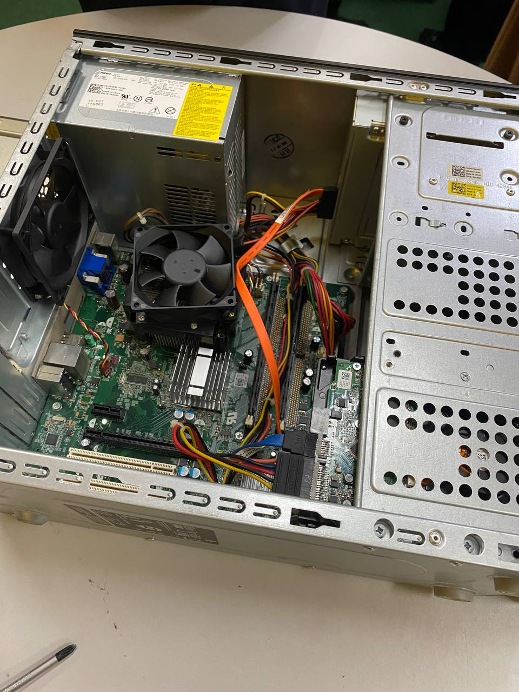

Summary
I am a dedicated individual with a passion for cybersecurity. My journey in education has equipped me with a strong foundation,
and my adaptability and fast learning skills make me a valuable asset. As a programming enthusiast, I am proficient in various
languages, including C++, C, Java, Lua 5.1, HTML, and JavaScript.
Core
Education
- High School: SMK Seri Sepang (9A)
- Foundation: Pusat Asasi UiTM (4.00 CGPA Engineering)
- Degree: Universiti Teknologi Malaysia (UTM) - Computer Science: Network and Security
Skills
- Adaptability: Quick to adapt to new environments
- Programming Languages:
- C++
- C
- Java
- Lua 5.1
- HTML
- JavaScript
Courses
- Foundation of Engineering
- Computer Science: Network and Security
Certificates
- Top 10% on my first-semester midterm exams during foundation studies
Honors and Awards
Best Student of SMK Seri Sepang (2021)
Projects
Industry Talk and Industry Visit
-1.png)
- For this assignment, we need to create a poster based on an industrial talk that we attended. The industrial discussion was hosted by UTM with the help of Clarity Techworks. This industry talk discusses about IT jobs that are currently available to people pursuing computer science degrees.
Because of the speed at which technology is developing, the speaker mostly focused on the value of adaptation in the IT industry. They discussed a few IT jobs, including data analysis, software development, and user interface design.
I learned a lot about the difficulties of pursuing an IT job from this presentation.It requires me to keep up with changes in the field and improve my skills in problem-solving.
In general, the industrial talk changes me in many ways. They provide me as a viewer with information about opportunities in the computer science sector and expose me to the world of IT careers.
Design Thinking (Low Fidelity Prototype)
- So basically, this task is about innovating any product that existing today. As a team, we have decided to innovate the current language translator into something better. Design thinking has improve me alot as a student because it teaches us problem solving skills that not many can teach. It also had improve my communication skills with the team members. I am sure that these skills will be essential in the future.
- This project is really good for those who studies in computer science field because it can actually improve your problem solving skills which is essential to computer science student. I will also improve my knowledge about IoT as it is the new trend right now. There are still many things that I will need to improve to become a successfull cybersecurity
PC Assemble (Lab)

- This lab requires us to disassemble the pc and reassemble it. I actually enjoyed this lab session because I get to experience what it's like to become a technician. I was surprised by the complexness of the computer model. In this session, we did as a team which made it easy and enjoyable as you get to discuss with your members.
- We tested and troubleshooted issues such as cable and component connections. There's this component that is sensitive to human touch which is surprising
- The procedure of disassemble and reassemble the pc requires concentrations as you need to be precise. You need to handle the components carefully and make sure nothing is defects.
- This session taught me how disassemble and reassemble the pc. It also taught me about the importance of handling electroning components carefully. I learned communication skills which is important when you have a job in the future.
- Lastly, this lab session was a good experience for me especially a computer science student. Sometimes experience is the best teacher and you cannot always depend on your theoretical knowledge.